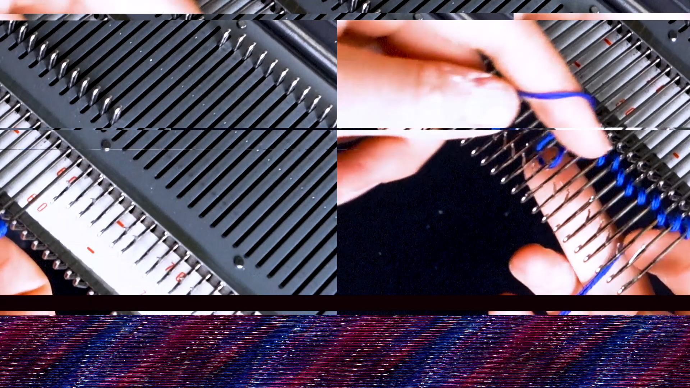
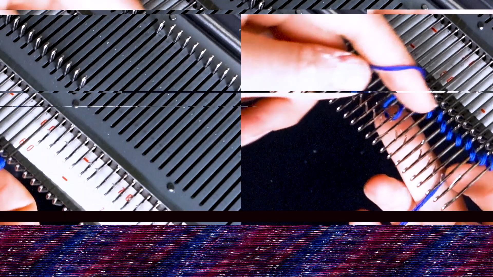

Breaking the Code
Textiles and code are two areas that have historically been closely intertwined, but today are often considered separately.
This has much to do with persistent gender perceptions and the socially entrenched hierarchy of manual labor and technology. This project is an attempt to combine textile materials and electronic components, focusing not only on new approaches to human-technology interaction, but also on the potentials of bridging the two fields.
This project consists on the one hand of extensive research in form of a written thesis analyzing the gender connotations of both textile work and programming throughout history and a discussion of the connections between the two fields. Complementing this theoretical part are material studies on combining textiles and electronics. They culminate in four textile objects that react to visitors' curious touches, some in very loud and visible ways, others more privately.
In a version of this project shown at Design Zentrum Hamburg, touching one of the interactive textile objects did not only trigger a tactile response but also generated glitches in a video showing how the object was made. Breaking up the pixel grids of today's digital images, made their textile origins visible.
.jpg) 

.jpg)
.jpg)